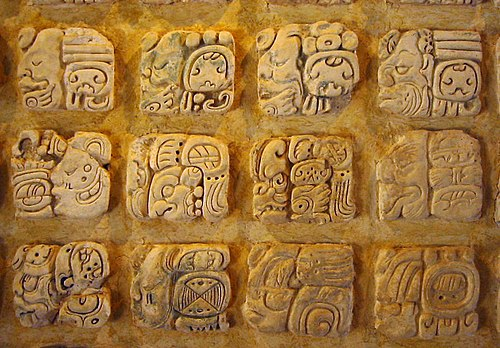

ERASED
Four writing systems suppressed under colonial and state power.
Writing systems are never politically neutral. Every script encodes a claim — about who counts as a people, whose words are worth preserving, whose silence is acceptable. The medium you are reading this in, a website, is no exception.
The web defaults to the Roman alphabet at every layer: in the bytes of URL links, in the order of Unicode encoding, in the keyboards on your desk, in the fallback fonts your browser ships with. Latin was standardized first, fastest, and most completely. Every other script came later — if it came at all.
Sometimes, on the web, you might see empty boxes: □ □ □. This empty box is called tofu. Google named its open-source font family Noto — “no tofu” — in an attempt to cover every character in Unicode. Their mission is to support all languages and symbol to ensure seamless digital communciation globally. The very existence of that project is an admission: by default, the web cannot render most of the scripts the world has invented.
The pages that follow are written in four scripts the world tried to make disappear. Where they appear here as glyphs, they have survived. Where they appear as □, the infrastructure has failed them.
ᏣᎳᎩ
Cherokee
Sequoyah, a Cherokee silversmith who could not read English, spent twelve years building a syllabary from nothing. By 1825 the Cherokee Nation had a higher literacy rate than the white settlers around it. By 1828 it had a bilingual newspaper, The Cherokee Phoenix, set in type cast from Sequoyah’s designs.
Two years later, the United States passed the Indian Removal Act. In the winter of 1838–39, the Cherokee were marched west on what they called ᎤᏪᏥ ᏧᎾᏕᏯᏔᏅ — the trail where they cried. The syllabary went with them.
Through the late nineteenth and twentieth centuries, federal boarding schools beat the script out of Cherokee children alongside the language. Speakers and readers shrank to a few thousand. But the script survived because the community refused to let it die.
ᎠᏂᏴᏫᏯ
Cherokee was added to Unicode in 1999. The lowercase characters — cast by Sequoyah but never encoded — waited until 2015. For sixteen years, half of the script existed and the web could not see it.
ꕙꔤ
Vai
Bukẹlẹ said the script came to him in a dream. He and a small group of collaborators in the Vai-speaking towns of present-day Liberia worked it into a teachable syllabary within a year. By the 1840s, European visitors were reporting Vai literacy in villages where no missionary had ever set foot.
Vai literacy was the first documented case of mass literacy in West Africa achieved without the alphabet, the Quran, or the colonial school. It demonstrated that African societies invented writing on their own terms, when they needed it, in the form they chose — an argument the colonists could not accommodate.
English-medium schooling, established under Americo-Liberian and later British and American mission control, treated Vai as folk knowledge rather than as a literate tradition. The script was tolerated, then ignored, then forgotten in the curricula of the people who used it.
ꕉꕩ ꔀ ꖸ
Vai entered Unicode in 2008, one hundred and seventy-five years after Bukẹlẹ taught it to his first student.
ߒߞߏ
N’Ko
As a young man, Solomana Kanté was angered that foreigners considered Africans without culture since they didn't have their own writing system. In response, he developed N’Ko — literally “I say”, the phrase that all Manding speakers share across dialects.
Kanté chose to write it right-to-left, in the direction of Arabic, the script of Islamic learning in West Africa. He chose to give it its own letterforms, distinct from Latin and Arabic alike. He chose to make the orthography easy to teach and owned by no colonial power. Within a decade, N’Ko schools and presses had spread across Guinea, Mali, Côte d’Ivoire, and beyond.
N’Ko spread through grassroots literacy associations and private schools rather than through state systems. It remained the script of choice for many Manding speakers as a marker of cultural and linguistic identity.
ߒߞߏ ߞߊ߲
N’Ko was added to Unicode in 2006. Web rendering of right-to-left scripts requires explicit declarations — dir="rtl", unicode-bidi: embed — that the spec considers exceptional. However, the default of this medium – websites – remains left to right.

Maya
On the twelfth of July, 1562, Diego de Landa, Franciscan bishop of Yucatán, gathered the painted books of the Maya and burned them. “We found a large number of books in these characters,” he wrote, “and as they contained nothing in which there were not to be seen superstition and lies of the devil, we burned them all, which they regretted to an amazing degree, and which caused them much affliction.”
Four pre-Columbian Maya codices survived. Three are named for the European cities where they ended up — Dresden, Madrid, Paris — rather than for the towns where they were written. The fourth, the Maya Codex of Mexico (formerly the Grolier Codex), is held at the National Museum of Anthropology in Mexico City.
The Maya script has no Unicode block. A proposal exists; it has not been ratified. The image below is not text, and the tofu boxes below aren't either. The browser cannot search it, copy it, screen-read it, or index it. The web treats Maya writing as an image.
□ □ □
The other three scripts in this essay were eventually granted addresses in the universal character set. Maya is still waiting for the standards body to assign it a number.
The Order of Arrival
Each row plots a script from invention to Unicode encoding. The bar measures the gap between the two: the years a script existed before the standard gave it an address.
Bars are roughly proportional but not strictly to scale — ancient origins are compressed so the chart fits. The axis runs c. 1700 → today.
-
Latin
c. 700 BCE ← 1991in from day one
-
Cherokee
1821 1999178-year wait
-
N’Ko
1949 200657-year wait
-
Vai
1833 2008175-year wait
-
Maya
c. 250 CE ← → pending~1,775 years, counting
Cherokee and Vai — two of the most successful indigenous script inventions of the nineteenth century — each waited close to two centuries for the Unicode Consortium to assign them an address. N’Ko slipped in within sixty years, partly because it was invented when international encoding standards were already taking shape. Latin was there from day one. Maya, the oldest of these systems, is still waiting in line.
ᏣᎳᎩ ꕙꔤ ߒߞߏ